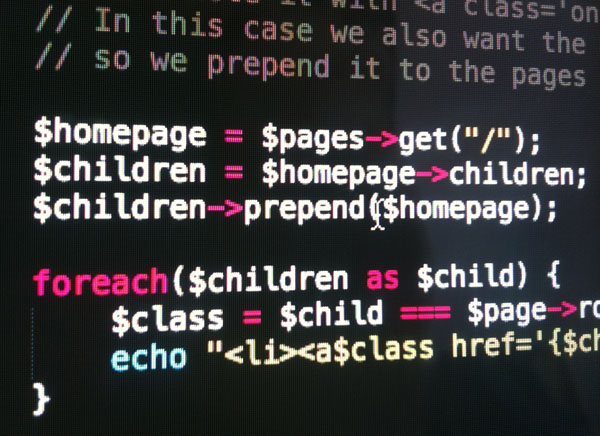

Kurzübersicht
- benötigt Apache, PHP und MySQL
- mehr als 160 Module vorhanden
-
Version 2.3 im April 2013 veröffentlicht
- API unterstützt alle jQuery-Traversierungsfunktionen
- Roadmap
- 2.4 im Sommer 2013 (Umstieg auf PHP 5.3)
- 2.5 im Winter 2013/14
Kernfeatures
(= Wohlfühlfaktoren)
-
so gut wie keine Vorgaben
- Templates haben keine Standard-»Pflichtfelder«
- Template-Entwicklung auf Dateiebene je nach Präferenz wählbar (»WordPress-Style«, MVC, …)
-
ausgeklügeltes Template-Management
- Templatefelder können individuell angeordnet, mit Template-spezifischen Hilfstexten versehen und auf verschiedene Tabs aufgeteilt werden
- arbeitet und funktioniert, wie man es mag
- volle Kontrolle über den Output
Mächtige API + Selektor-Engine

-
»API zum Verlieben«™
- lässt sich auch einfach in anderen PHP-Apps oder Shell-Skripten nutzen
- jQuery für PHP (= kinderleicht)
- schnell & unkompliziert entwickeln
- ausdrucksstark und mächtig
- es macht Spaß damit zu arbeiten
Modulare Plugin-Architektur
- CMS selbst ist modular aufgebaut
- besteht lediglich aus vorinstallierten Modulen
- nahezu jede Komponente und Aktion ist durch Hooks ansprechbar (Cheatsheet aller Hooks)
- ProcessWire ist darauf ausgelegt sich einfach erweitern zu lassen
»Seiten« zentrales Konzept
-
nicht nur für typische Inhaltsseiten verwendet
- z.B. Nutzer und Nutzerrollen, Admin-Seiten, Taxonomien, etc. sind auch »Seiten«
-
versteckte Seiten dienen als Datenbankeingabemasken
- Pflegeoberfläche für beliebige Inhalte → \o/
- schöne Schlussfolgerung:
- wenn man Seitenkonzept verstanden hat, hat man ProcessWire verstanden
Performance und Skalierbarkeit
-
Backend ist out-of-the-box pfeilschnell
- mehrere 100k Seiten überhaupt kein Problem
- Forum ist zentrale Anlaufstelle
- kleine (aber feine) Community
- hilfsbereit, freundlich & kompetent
- Hauptentwickler klinkt sich in nahezu jeden Thread ein
- nach maximal einigen Stunden ist das Problem gelöst
- Verbesserungsvorschläge werden gehört und ernst genommen
Und, und, und
- integrierte Nutzerverwaltung mit rollenbasierten Rechten
- gute Möglichkeiten für Mehrsprachigkeit
- unzählige Feldtypen (u.a. Datetime, Email, File, Image, Page, Password, Repeater, Text, Textarea, URL, …)
- Templates und Felder sind kategorisierbar
- Installationsprofile (z.B. voll funktionsfähiges Blog)
-
unbegrenzte Anwendungsfälle
- Micro Site, Blog, Web-App, soziales Netzwerk, Portal, …
Nachteile
-
vernünftiger Media-Manager fehlt noch
- Default-Admin-Theme könnte nutzerfreundlicher sein
Fazit
- junges CMS
- einfach & mächtig
- vielversprechende Roadmap
- mit Spaß arbeiten